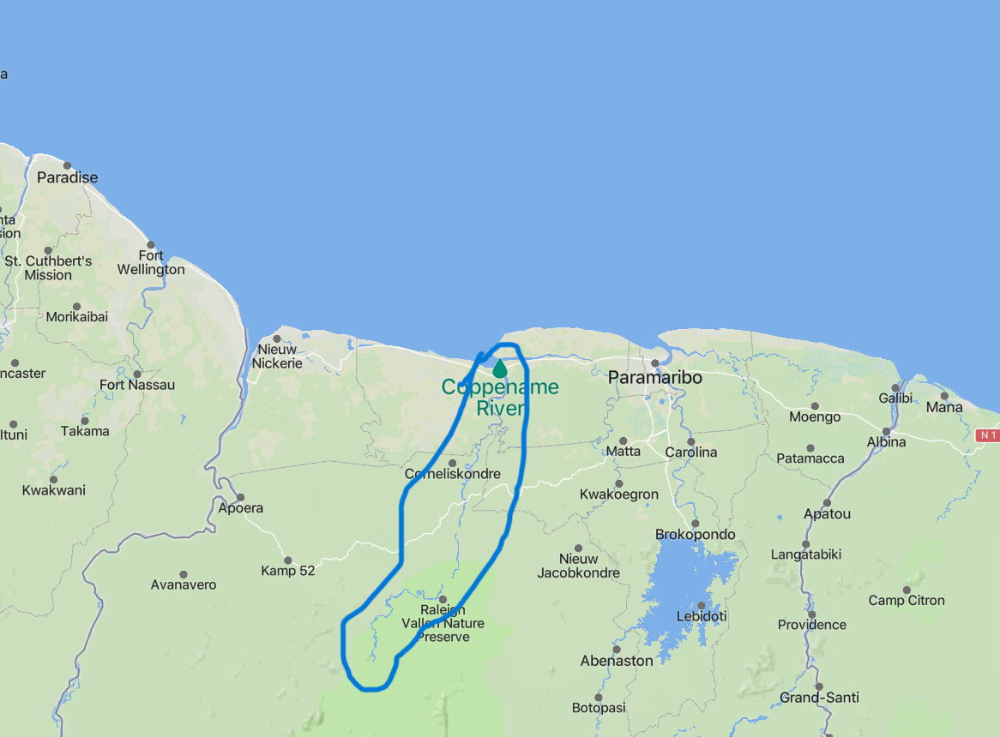
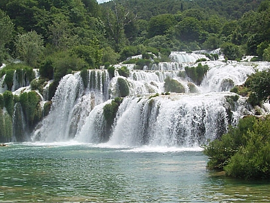

The Coppename River
The Coppename River is connected to the Nickerie River by a artificial made river called Wayambo which came to be when various made bridges and dams caused bifurcation of the Nickerie into the Coppename which gets its flow from the southern Wilhelmina Mountains. The regions in between these two main rivers are often flooded and have many bridges to traverse.
 A map view of the CoppenameMaroon villages are the only residents of this region and snakes are more common here than in other regions. It is mostly safe for tourism but is a good distance away from easy access and requires experience or insight into the local customs and culture. Kwinti is the language of the land here and there are three main tribes to look out for: Kaaimanston, Bitagron, and the Heidoti.
 A look at one of the waterfalls at this riverThere is not a lot of information on the region and much of the tourist attractions such as the waterfalls are only accessible by plane. (safely)